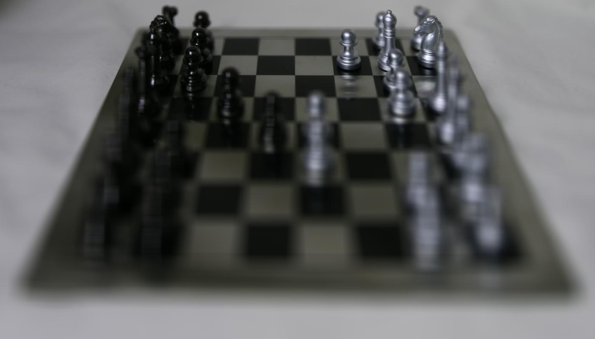
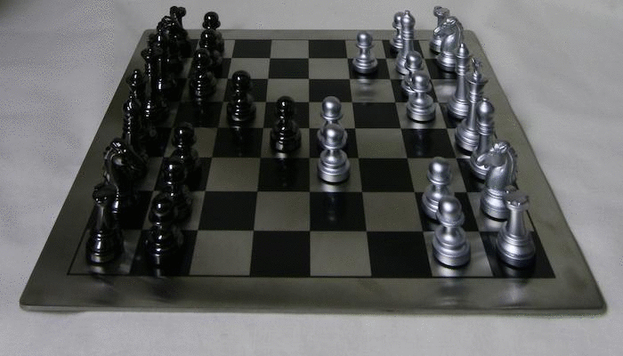
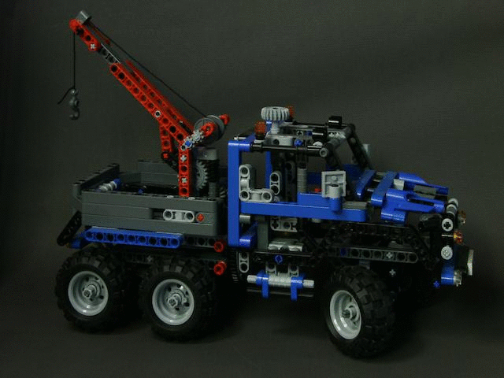

Depth Refocusing and Aperture Adjustment with Light Field Data
CS 194-26 Project #6 · Owen Jow · October 2016
[0] Introduction
If a regular 2D photograph is the amount of light that runs into each pixel on an image plane, then the analogous 4D light field is the amount of light traveling along each ray that runs into the image plane. In other words, it captures the direction of the light values as well as the light values themselves. As Ng. et al. describe in this paper, we can use the additional information to enable countless post-processing effects such as refocusing and aperture resizing. (As a result, having light field data is useful for photographers since it means they no longer have to decide between controlling motion blur and controlling depth of field!)
In this project, we focus (through alignment and averaging, haha) on the two light field applications mentioned a few seconds ago: depth refocusing and aperture adjustment. Without a Lytro camera, we turn to the Stanford Light Field Archive for photographic data to process.
[1] Depth Refocusing
Each light field in the Stanford dataset is represented as a collection of 289 sub-aperture images taken over a 17 x 17 grid (/captured over a plane orthogonal to the optical axis). Each sub-aperture image can be thought of as the light that comes through a different part of some universal aperture, or effectively just the same "back of the lens" picture taken a bunch of times from slightly different positions. (As a side note, this means that it's theoretically possible to record light field data with a conventional camera just by snapping many variations on the same shot. We could do that as a bells and whistles option for this project, actually, but ain't nobody got time for that.)
In our minds, we can turn such images into light rays because each \((x, y)\) position on the image plane and each \((u, v)\) position on the aperture plane uniquely define a ray. In this way, the parameters \((x, y, u, v)\) make up the four dimensions of our plenoptic function. With the Stanford data, we maintain a fixed \((x, y)\)-plane – the output image itself – while varying \((u, v)\) over the positions specified in the image names. Thus we can consider ourselves to have the set of rays that will be integrated by a single pixel, for every pixel on the image plane.
Then what? Well, we can create our output photograph by performing that integration process – i.e. adding up and averaging the light from all those rays. But perhaps we don't want just any output photograph; perhaps we want our image to be focused on a specific point of interest. For this we introduce shifting. With the Stanford dataset in hand, all we have to do to focus on some element is shift-align the sub-aperture images so that our element is at the same position in every image... and then average the lot of them. Of course this means we need an image of reference (the image whose content all of the other images will be shifted toward), and here we choose the central sub-aperture image for that role: the one corresponding to point \((8, 8)\) if we're still speaking of our 17 x 17 grid.
Unfortunately, it turns out that to focus on a certain element it's necessary to run extra processing (in order to compute those tailored shifts). Accordingly, for the time being we remain lazy and deign merely to shift the image based on some arbitrary constant \(C\). With this, we arrive at our refocusing algorithm, where actually the pseudocode below was straight ripped from Prof. Ng's lecture slides:
for every sub-aperture image I(x, y):
compute the (u, v) coordinates corresponding to that image
shift by Δ(x, y) = C * (u, v)
average the shifted image into an output image
We compute \((u, v)\) by utilizing the absolute coordinates given in the image filenames.
Note that when \(C = 0\), we're just averaging all the images without any shifting. This produces an output image that's sharp for distant objects and blurry for the nearby ones (why? Because from the aperture's point of view distant objects hardly even move, relatively at least, so their pixel values are unaffected and are as sharp as they would be for a tiny aperture. Meanwhile, nearby objects vary their position a lot and as a result have their colors all mixed together and blurred). So by default, averaging focuses on faraway world space. This is demonstrated below; the following two images each represent the non-shifted mean of their respective dataset:

Chess; C = 0 |
Truck; C = 0 |

Chess; C = -0.3 to 0.8 |

Truck; C = -0.2 to 0.6 |

Tarot; C = -0.5 to 0.6 |
[2] Aperture Adjustment
We can also post-process the images in order to virtually modify the size of the aperture. To do this, we fix our \(C\) (if only so we can highlight aperture adjustment instead of depth refocusing) and simply include more or less sub-aperture images in our average. If wanted the smallest possible aperture, we wouldn't average anything at all – instead we'd just return a single one of our sub-aperture images. In our case, we'll again base our photographs around the central \((8, 8)\) image, so we'd actually return that.
Then, to increase the aperture size, we'd average more images in the space around the central image. We step over radius lengths here (although technically we average over a box, not a circle). For radius 0, we return the central image; for radius 1, we average the 3 x 3 box of sub-aperture images around the central image; for radius 2, we average the 5 x 5 box... and so on so forth. By the end of it, we're averaging the entire collection of sub-aperture images again.
Intuitively, this represents a larger aperture because we're expanding the space (the grid) around the center of the aperture that we're letting light pass through. If we think of each sub-aperture image as the light that passes through a certain portion of the aperture, then obviously taking into account more sub-aperture images will take into account a bigger portion of the aperture. (We get more light rays – more pixel values – due to a larger aperture!)
Below are examples of aperture adjustment in action. In each, we set \(C = 0.1\) (which seems to focus around the middle) and run Part 1's depth refocusing algorithm on varying numbers of images around the \((8, 8)\) photograph.

Chess; C = 0.1 |

Truck; C = 0.1 |
Tarot; C = 0.1 |
[3] Summary
About a year ago, I found Lytro's living picture demonstrations and they became a nontrivial motivator for my enrollment in Ren Ng's graphics class / interest in comp. photo-esque material in general. I remember being blown away by the idea of refocusing images and seemingly moving the viewpoint after taking a picture. Thus, through this project I'm excited to have been able to implement a refocusing algorithm via light field data at last.
Also, I found it interesting that light fields would be given in the form of sub-aperture images (I previously thought it would be more of a primitive "directional rays with light values" kind of deal), but in hindsight it makes a lot of sense and was very straightforward to work with. On the whole, it was pretty eye-opening to experience how simple and effective these light field methods can be – because really all this project came down to was shifting and averaging, and through that I was able to recreate the type of post-processing that so amazed me one year ago...